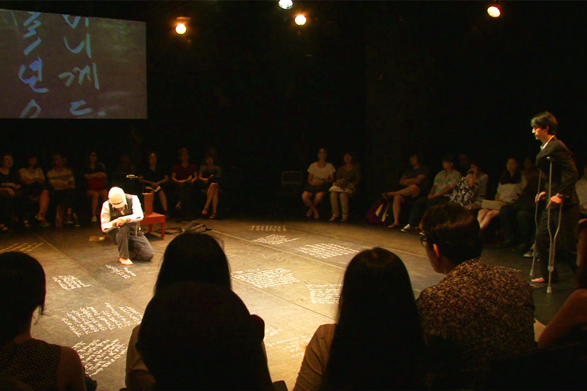
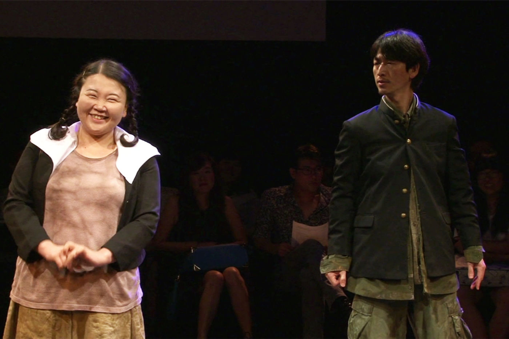
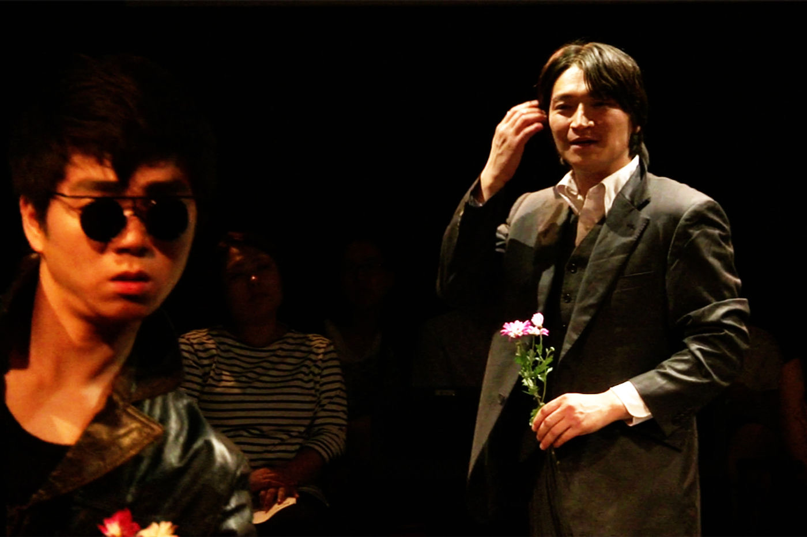
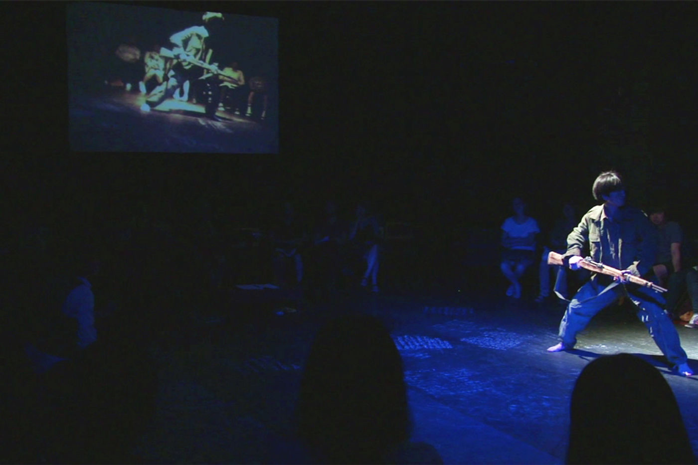

Performance — 2013
The Diary of an Aged Horse
항일 저항 작가 김사량의 삶과 그가 남긴 기록 《호접》을 좇는 리서치 기반 연극.
A research-based theater work tracing the life of anti-colonial writer Kim Sa-ryang and the record he left behind, Hojŏp.
‘늙은 말의 일기’는 항일 저항 작가 김사량의 삶과 그가 남긴 기록을 리서치하고 따라가는 과정이었습니다. 이 리서치는 노마만리, 《호접》, 《김사량 — 작품과 연구》(전 3권), 《김사량 평전》, 《조선의용군 마지막 분대장 김학철》 등의 자료와 12편의 학술 논문, 영상 자료, 웹사이트, 사진 등을 두루 참고했습니다. 기억은 오래된 폴더를 꺼내는 일이 아니라, 공감을 통해 되살아나는 것입니다.
작품은 ‘노마만리’를 떠나 《호접》을 써 내려가는 작가 김사량의 여정을 보여줍니다. 일제의 탄압에 저항하며 신변의 위협을 피해 일본으로 도피했다가, 이후 중국으로 건너가 ‘노마만리’의 여정에 오른 김사량은 그곳에서 1941년 12월의 호가장 전투 소식을 듣습니다. 중국 화북 스자좡 인근 위안스현 호가장 마을에서, 선전 임무를 마치고 잠시 휴식을 취하던 조선의용군은 일본군의 기습을 받습니다. 조선의용군은 맞서 싸우며 포위망을 뚫었고, 팔로군이 합류하며 일본군은 퇴각해 전투는 하룻밤 만에 끝났습니다. 김사량은 이 호가장 전투와 조선의용군의 삶을 상세히 기록하기 시작했습니다. 흘러가는 시간과 잊혀가는 기억을 좇으며 그는 쉼 없이 기록을 이어갔습니다. 극은 김학철이라는 인물의 시선을 통해 김사량의 삶과 그의 작품 《호접》을 교차시킵니다. 그 시대를 살아낸 이들을 기억함으로써, 시대의 고통을 짊어진 사람들을 애도하고 66년간 역사에서 잊혔던 《호접》을 기립니다.
The Diary of an Aged Horse was a process of researching and following the life of the anti-Japanese resistance writer Kim Sa-ryang and the records he left behind, drawing on sources including Noma Manri, Hojŏp, Kim Sa-ryang: Works and Studies, and academic papers, footage, and photographs. Memory is not about retrieving an old folder — it is revived through empathy. The work follows Kim Sa-ryang’s journey from ‘Nomamanri’ to writing Hojŏp, interweaving his life with the Battle of Hogajang and the Joseon Volunteer Army through the eyes of a figure named Kim Hak-cheol — mourning those who lived through that era and commemorating Hojŏp, historically overlooked for 66 years.
- 키워드
- Keywords
- Kim Sa-ryang · Joseon Volunteer Army · archival research · memory
Doosan Art Center SPACE111, Seoul — 2013


